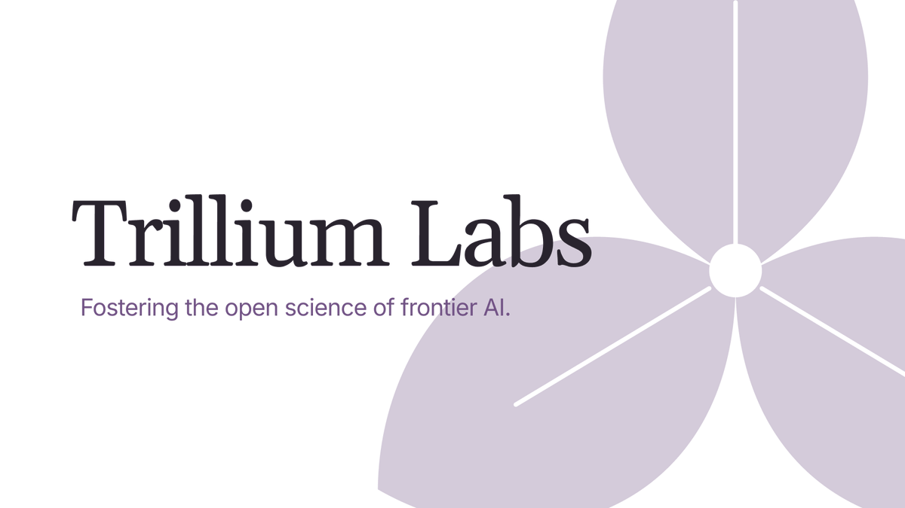
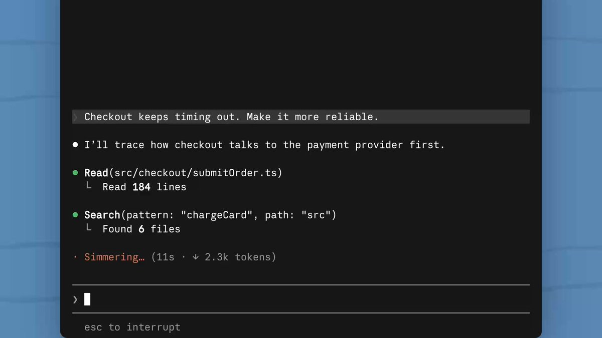
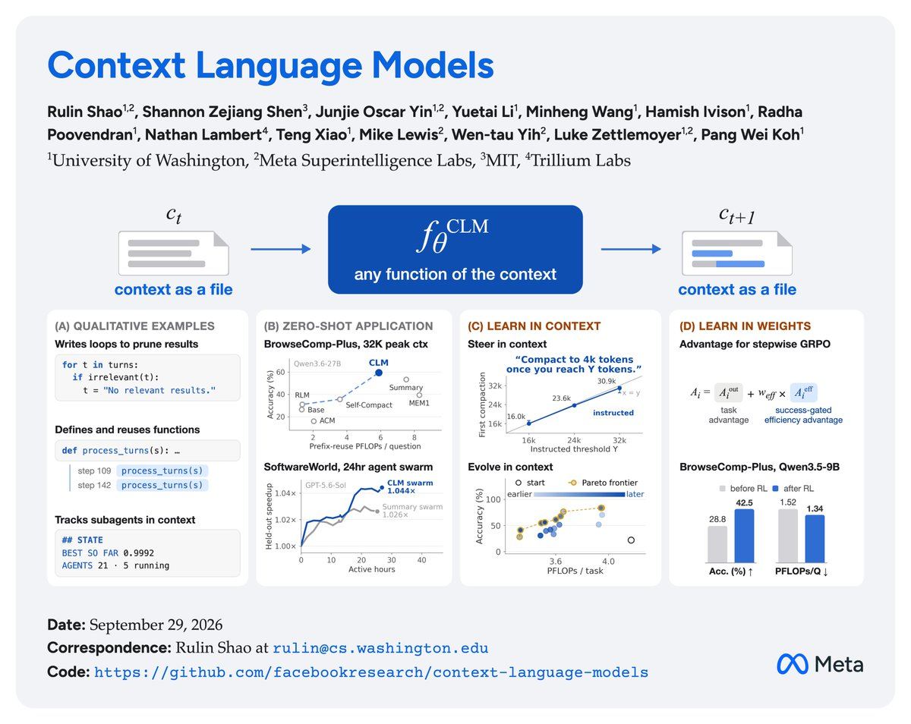
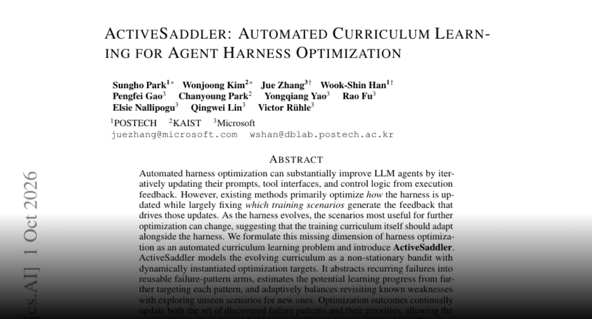
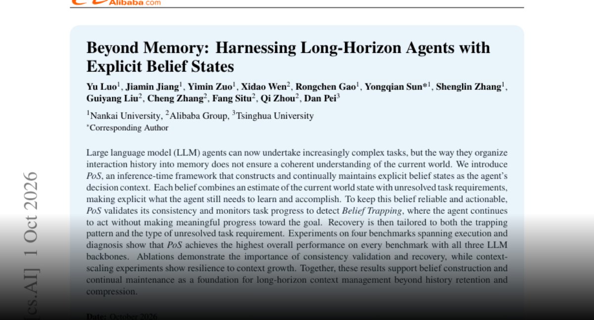
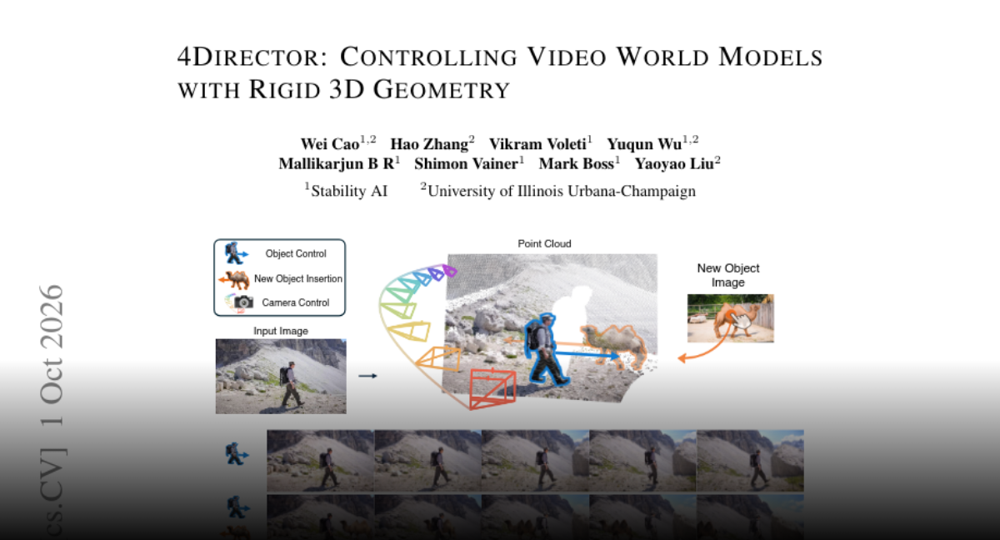
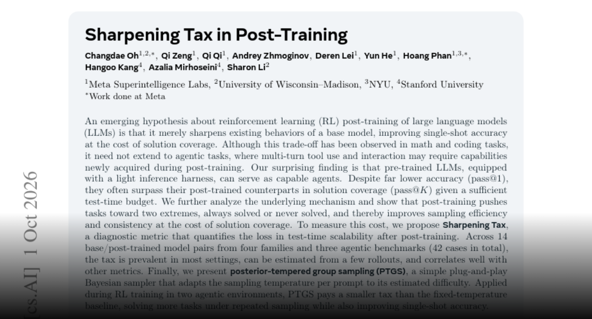
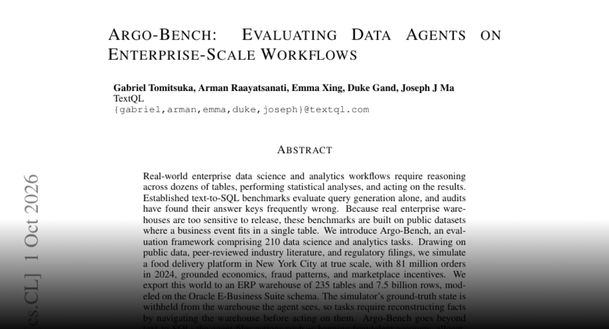
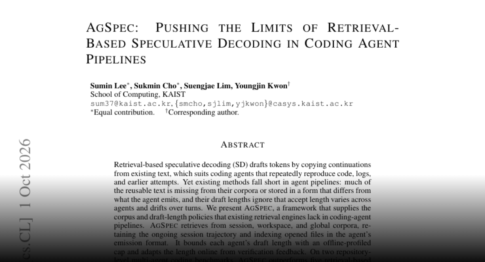
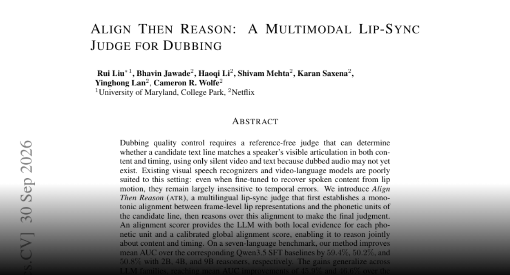

01
OpenAI 发布 GPT-6 系列实践指南
OpenAI 发布面向初创企业的 GPT-6 实践指南，涉及模型选择、推理强度、提示词与技能、工具协调和生产准备。重点是模型与工作流配置共同影响结果；这是厂商指南，并非新模型发布或独立性能比较。
每天一次，过滤 AI 噪音
OpenAI 发布面向初创企业的 GPT-6 实践指南，涉及模型选择、推理强度、提示词与技能、工具协调和生产准备。重点是模型与工作流配置共同影响结果；这是厂商指南，并非新模型发布或独立性能比较。
OpenAI 的《The Eternal Complement》讨论先进 AI 在突破性想法背后的日常执行工作中可能发挥的作用，认为执行能力会影响经济与发现速度。对智能体团队而言，值得关注的是从想法到完成结果的工作链条；这是一种观点，而不是量化生产力证据。
Stillwet 让语言模型编写程序，控制油彩、画笔、干燥和罩染的模拟环境。部分模型分阶段作画并观察画布，网站也记录重复构图与上下文相关错误。图像来自程序控制的笔触，而非独立图像生成器，因此可以直观看到工具调用过程及失效模式。
Hacker News 分享的报道介绍了 AI 在 Stratego 军棋中的进展，该游戏包含大量对手不可见的信息。报道强调对顶尖人类选手的表现与预算，并提供论文线索。其意义在于不完全信息决策，但当前候选材料不足以推断真实世界规划任务中的同等能力。
Linux 维护者 Greg Kroah-Hartman 的《Security in the LLM Age》视频在 Hacker News 引发讨论，主题与软件安全及代码审查相关。所收集材料只有标题和讨论指标，没有演讲文本，因此作为值得观看的一手演讲收录，不推测其具体建议。

Hacker News 帖子将 Dwarfstar 介绍为本地运行大模型的项目，并提到 Redis 创始人与 ds4。候选材料没有硬件要求、模型规格或评测结果；对于探索本地推理的开发者，这是一条项目发现线索，技术适用性仍需查看其文档。

Nathan Lambert 宣布成立 Trillium Labs，专注前沿 AI 开放科学。初期将开发开放的后训练配方，并计划扩展研究基础设施，研究递归自我改进、奖励作弊和多智能体系统。可复现方法有望帮助外部研究者分析能力与失效模式；这些仍是机构计划，并非已完成的研究成果。
Google 在 9 月 30 日介绍 Gemini 4 Argon，面向软件工程、知识工作和网络安全防御，并宣布百万 token 输出上限。超长输出可能适合大型交付物，但公告本身不能证明该长度下的可靠性、延迟或成本；性能表述来自 Google，尚非独立评测结论。
Google 表示与 Planet 合作，通过 SpaceX Transporter-18 发射了搭载四颗 TPU 的原型卫星。这是 Project Suncatcher 太空计算研究的第一步，属于实际硬件里程碑；大规模部署的经济性、运行可靠性和可行性仍需后续研究。
Gary Marcus 表示纽约市议会议长 Julie Menin 提出了要求 AI 模型接受第三方验证的法案，并支持以独立评估补充企业自律。此处报道的是提案，并非已生效法律；该帖没有提供适用范围或执行细则，企业应关注后续正式文本。

Claude 开发者账号宣布 Claude Code 新增 You Should Know 插件，可扫描输出并提示用户可能遗漏的重要信息。它针对长篇智能体输出中关键信息难以察觉的问题；公告介绍了用途和启用方式，但未给出监督效果或错误发现率的量化评测。
Sam Altman 表示 OpenAI 的 dot 随着了解其工作流与风格而变得更有用，尤其能够帮助处理他容易拖延的日常任务。这是个人产品体验，不是发布规格或受控评测；它反映了持续积累个人上下文的助手方向，但没有量化自主完成任务的能力。
François Chollet 分享 Keras 社区会议摘要，计划以附加库提供可插拔后端，包括即将推出的 MLX 和 PaddlePaddle 支持，并通过后端无关的次要算子实现减少接入工作量。这是架构计划，不能据此认定相关后端已全部发布。
Runway 表示联合创始人兼联合 CEO Cristóbal Valenzuela 在 AI Summit 闭幕环节介绍了 Runway Labs 的 Continuum。相关发言将其描述为围绕实时视频构建操作系统的研究方向，体现生成视频向交互界面延伸。该帖属于项目介绍，并非正式普遍可用产品或性能评测。
Runway 联合创始人 Cristóbal Valenzuela 宣布 Praxis-1 为开放权重世界动作模型，称其可通过少量微调适应新的机器人形态。该方向连接视频建模与物理控制，但公告没有提供足够实验细节，无法独立判断跨机器人迁移的效果或数据成本。

Nathan Lambert 介绍了让语言模型直接编辑上下文的研究，目标包括改善长程记忆和计算效率。这对不断压缩历史、同时保留任务状态的智能体有实际意义；所收集帖子未提供量化结果，因此相关收益仍属于研究方主张。
Impeccable 将自身定位为帮助 AI 工作框架提升设计能力的设计语言，反映了围绕编码模型补充设计指导的需求。仓库描述说明了目标，但不能证明质量提升；团队应结合现有设计系统和实际界面任务评估其适用性。

ActiveSaddler 将训练场景选择纳入智能体框架优化，归纳重复失败模式并动态分配学习重点。作者报告，相比固定场景顺序，在 GAIA2 与 Terminal-Bench 2.0 上 Pass@1 分别提高 4.4 和 7.5 个百分点，说明课程安排与提示、工具及控制逻辑同样值得优化。

PoS 框架显式维护当前世界状态和未完成需求，检查一致性，并在智能体持续行动却没有进展时触发恢复策略。作者报告其在四个基准、三种模型上取得最强总体表现。重点是组织当前理解，而不仅是存储或压缩交互历史。

4Director 将输入图像中的物体重建为规范网格，通过逐帧刚性变换控制运动，再以深度视频和 Motion Adapter 生成画面。作者提供 20,774 段训练视频及同时衡量运动遵循与身份保持的指标，目标是提高相机、物体控制和跨视角一致性。

Sharpening Tax 研究后训练是否提高单次成功率却降低重复采样能覆盖的任务范围。作者比较四个系列的十四组模型与三个智能体基准，发现这一权衡较普遍，并提出诊断指标和后验温度分组采样。评估模型时应同时考虑单次准确率与测试时扩展能力。

Argo-Bench 在包含 235 张表、75 亿行数据的模拟外卖业务中设置 210 项任务，要求智能体理解事实并执行行动，评分依据模拟器中的后果。十四个模型中最强者平均 59.5 分，仅 34.8% 的任务达到 95 分，揭示了 SQL 生成之外的能力缺口。

AgSpec 从会话、工作区和全局语料中复用文本，并依据验证反馈调整草稿长度。作者在两个仓库级编码基准上报告，相比自回归解码，批量为 1 和 16 时吞吐最高分别提升 4.37 倍和 4.76 倍。这是特定测试中的生成吞吐，不等同于任务端到端加速。

Align Then Reason 仅用无声视频和文本判断配音台词是否匹配口型，先对齐唇部表征与音素，再让语言模型结合局部与整体证据判断。作者在七语言基准及真实配音排序、台词片段分配任务上报告改进，同时关注内容和时间匹配。